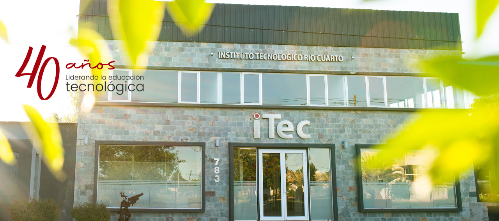
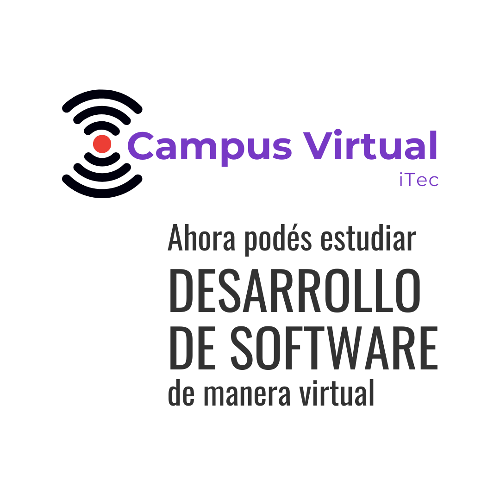
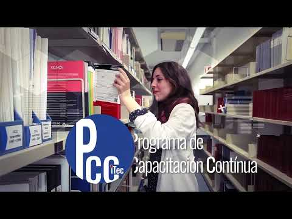
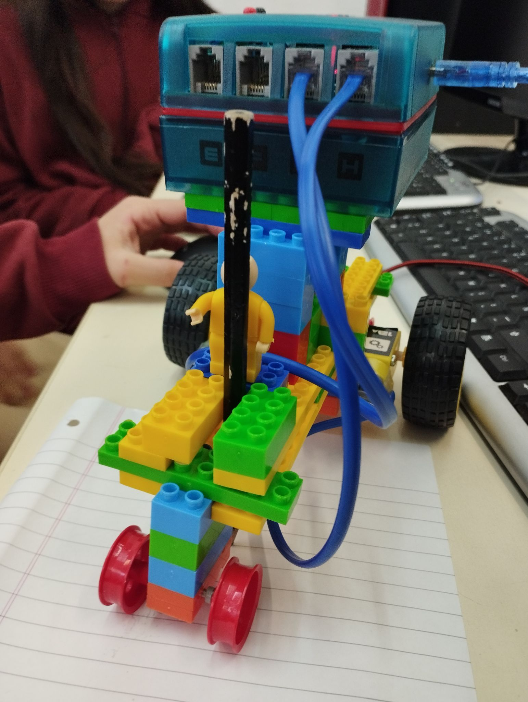
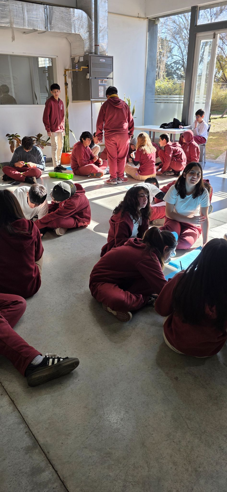

Entender el problema antes de programarlo.
Formamos personas capaces de analizar, preguntar y tomar decisiones frente a desafíos complejos.

Una educación técnica para pensar, crear y transformar.
Carreras superiores, escuela secundaria tecnológica y
capacitación continua en nuestra ciudad de Río Cuarto.
Es adquirir competencias laborales y sociales basadas en una educación integral y de calidad. Es poder usar las últimas tecnologías y adaptarse a los cambios constantes.
Formamos personas capaces de analizar, preguntar y tomar decisiones frente a desafíos complejos.
Proyectos, laboratorios, prácticas profesionalizantes y equipos de trabajo con situaciones reales.
Docentes, compañeros, organizaciones y empresas construyen una red para crecer juntos.
Cuatro trayectorias para entrar al mundo del trabajo, desarrollar una mirada propia y seguir aprendiendo durante toda la vida.
Un científico de datos analiza grandes cantidades de información para ayudar a las organizaciones a decidir mejor, resolver problemas complejos y optimizar operaciones. Aprendé matemática, estadística, programación e inteligencia artificial para transformar datos en conocimiento útil.
Conocer Ciencia de Datos e IA →Encontrá la combinación de presencialidad, encuentros en vivo, trabajo autónomo y prácticas que mejor acompañe tu recorrido.

Testimonios de estudiantes y egresados de las tecnicaturas del iTec.
La secundaria representa una etapa clave. Nuestra propuesta atiende las dimensiones pedagógicas, culturales y psicosociales del aprendizaje, con orientación en Programación y Robótica y una mirada crítica, reflexiva y ética sobre la tecnología.
Cursos cortos, talleres y especializaciones técnicas durante todo el año para potenciar tus habilidades e inserción laboral. La capacitación continua del iTec está abierta a toda la comunidad.
Ver cursos PCC ↗
Ver presentación ↗Recursos para estudiantes, egresados, organizaciones y empresas que forman parte del ecosistema iTec.
Ingresantes, horarios, calendario académico y acceso a SiTec.
Abrir recursos →Un puente entre estudiantes, egresados y empresas.
Quiero ser parte →Equipos de estudiantes y docentes desarrollando software para organizaciones.
Conocer el programa →Descargá la documentación oficial de cada tecnicatura.
Ver documentos →Fechas, horarios y momentos importantes para organizar tu cursada.
Abrir calendario →Formación profesional para ampliar tus posibilidades de trabajo.
Ver trayectos →Planes de estudio de las carreras superiores para descargar y consultar.
Una mirada al espacio, los proyectos y las personas que hacen iTec.




Visitá nuestras sedes, escribinos o acercate para conocer las propuestas de iTec Río Cuarto.
Constitución 716 — Barrio Centro, Río Cuarto
Por la mañana 8:00 a 12:30 hs · Por la tarde 17:00 a 21:00 hs
Wenceslao Tejerina Norte 783 — Barrio Villa Dalcar
Lunes a jueves, por la tarde de 19:00 a 22:00 hs